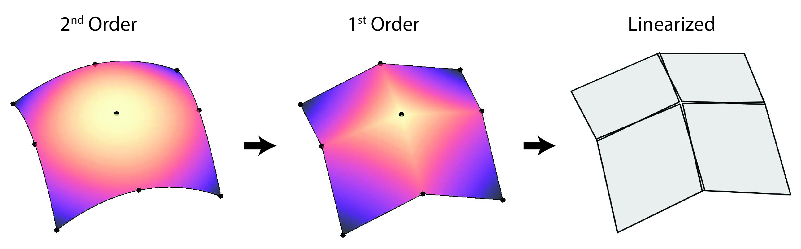

AutomaticMortarGeneration
The AutomaticMortarGeneration class is used to define mortar segment meshes to properly integrate discontinuities caused by normal projections of non-matching, faceted meshes.
2D
Generation of the 2D mortar segment mesh is outlined in Peterson (2018). In short, a nodal-normal projection is used to map points from the primary interface to the secondary interface; secondary interface elements are then split by the projected nodes to form mortar segment mesh elements.
3D
Generation of mortar segment meshes in 3D is more challenging and various approaches exist. In MOOSE we follow the approach suggested in Puso (2004), defining mortar segments on local linearizations of the secondary interface. When the secondary interface is composed entirely of TRI3 faces (which are already linear), generating the mortar segment mesh reduces to projecting the primary face elements onto secondary face elements (along the secondary face normal) and performing a polygon clipping (and subsequent triangularization). The mortar segment mesh is therefore simply a sub-mesh of the secondary mesh in this case.
The definition is more delicate for quadrilateral faces and second order geometries:
QUAD4 faces
While first-order, QUAD4 faces are (in general) not linear. The 'twisting' or 'potato-chipping' of QUAD4 elements complicates the simple projection and polygon clipping defined for TRI3 faces. To circumvent this problem, mortar segment meshes are defined on local linearizations of QUAD4 elements (see below). The linearization of QUAD4 face elements allows the same polygon clipping algorithm used for TRI3 face elements, but the mortar segment mesh elements produced do not coincide with the secondary mesh and the mortar segment mesh is disconnected between secondary elements.

Second Order Geometries (TRI6 and QUAD9 faces)
Elements defined on second order geometries are curvilinear so to simplify the 'clipping' procedure both secondary and primary face elements are subdivided into first-order face elements then subsequently linearized (illustrated below). The same clipping and triangularization routine is then applied on the linearized sub-elements to create the mortar segments. See Puso et al. (2008).

Quadrature points defined on mortar segments (which live on linearized elements) are mapped back to second order elements following an analogous but reverse procedure to the one illustrated above; points are mapped from linearized elements to first order sub-elements then subsequently transformed to the original second order elements.
References
- John W. Peterson.
Progress toward a new implementation of the mortar finite element method in moose.
2 2018.
doi:10.2172/1468630.[BibTeX]
- Michael A Puso.
A 3d mortar method for solid mechanics.
International Journal for Numerical Methods in Engineering, 59(3):315–336, 2004.[BibTeX]
- Michael A Puso, TA Laursen, and Jerome Solberg.
A segment-to-segment mortar contact method for quadratic elements and large deformations.
Computer Methods in Applied Mechanics and Engineering, 197(6-8):555–566, 2008.[BibTeX]